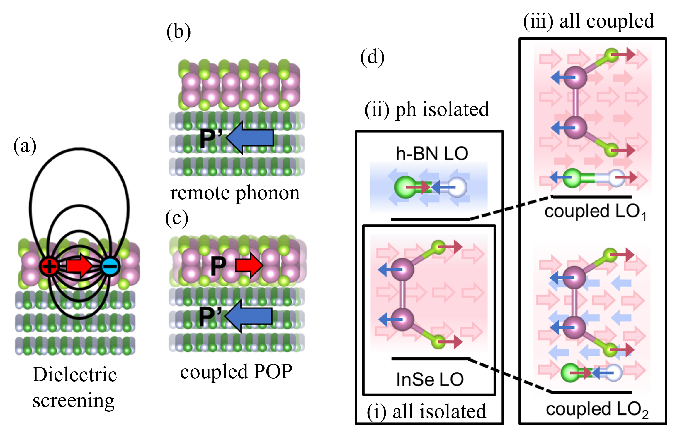

Abstract
Two-dimensional (2D) semiconductors have demonstrated great potential for next-generation electronics and optoelectronics. Their atomic thinness facilitates the material design for desirable electronic properties when combined with other 2D materials in van der Waals (vdW) heterostructure. Although the carrier mobility has been well studied for suspended 2D semiconductors via first-principles calculation recently, it is not clear how they are affected by surrounding materials. In this work, we propose a model to consider the Fröhlich scattering, an important scattering in polar materials from polar-optical (PO) phonons, in vdW heterostructures. Exemplified by InSe surrounded by h-BN, we found the InSe Fröhlich mobility can be enhanced about 2.5 times by environmental dielectric screening and coupled PO phonons in vdW heterostructures. More interestingly, the strong remote PO phonons can enhance the InSe mobility instead of deteriorating it once considering the PO phonons coupling. Then several quantities of surrounding dielectrics are proposed to optimize the InSe Fröhlich mobility, and then used for filtering potential 2D dielectric materials. Our work provides efficient calculation tools as well as physical insights for carrier transport of 2D semiconductors in realistic vdW heterostructures.
Reference
[1] C. Zhang* and Y. Liu, Fröhlich Scattering and Mobility of 2D Semiconductors in van der Waals Heterostructure. (submitted). [2] C. Zhang*, L. Cheng, and Y. Liu, Role of flexural phonons in carrier mobility of two-dimensional semiconductors: free standing vs on substrate. Journal of Physics: Condensed Matter 33, 234003 (2021).